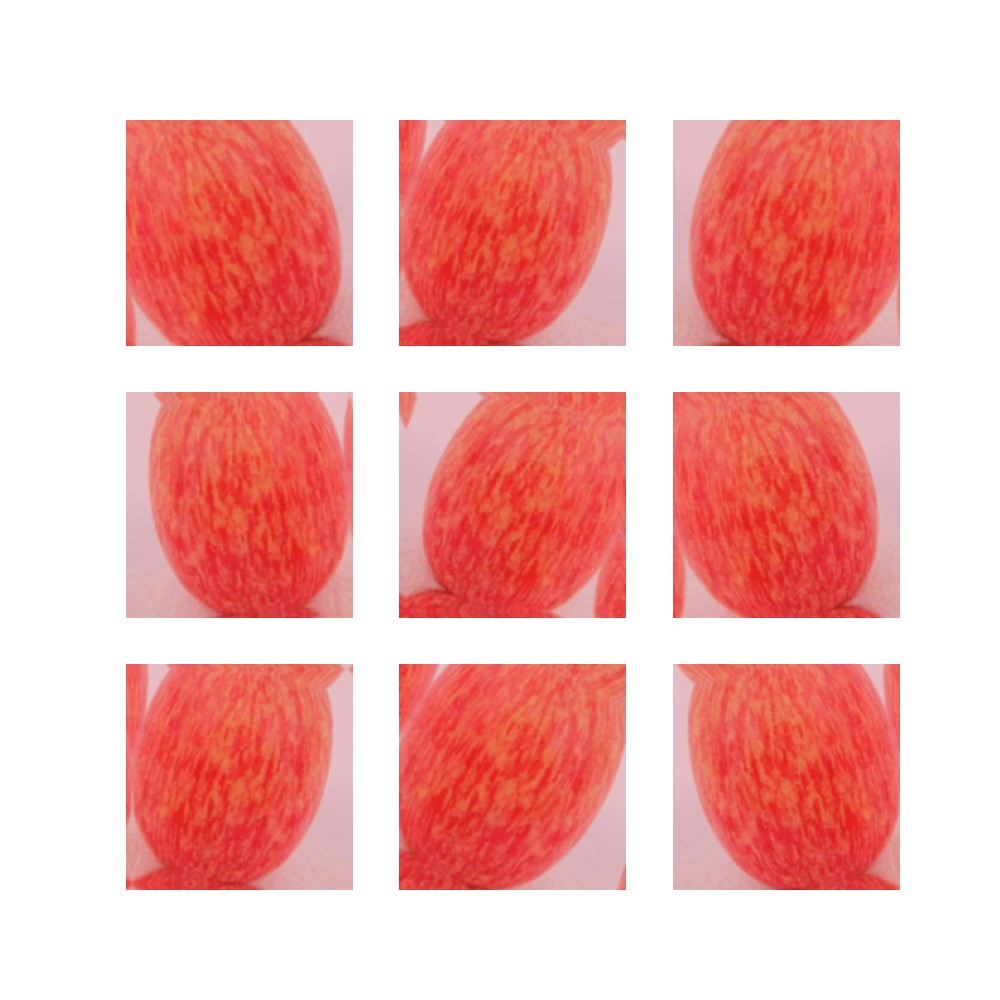

构建果蔬识别系统
构建果蔬识别系统
这是软件研讨课的个人项目作业。
简介
这个项目旨在使用深度学习技术构建一个果蔬识别系统，能够识别各种不同类型的水果和蔬菜。系统通过图像数据集进行训练，使用卷积神经网络（CNN）进行图像分类，最终能够准确识别并区分不同种类的水果和蔬菜。
开发环境与技术
开发环境
- Python编程语言
- TensorFlow和Keras深度学习框架
- 相关Python库（如NumPy、Matplotlib等）
技术
卷积神经网络（CNN）
图像数据预处理与增强
数据集拆分与训练验证集划分
模型训练与评估
数据增强

功能介绍
图像识别：能够识别并分类不同种类的水果和蔬菜。 训练与评估：使用数据集进行模型训练，并评估模型在测试集上的准确性。 预测展示：能够展示模型对测试图像的识别结果，并显示识别的置信度。
构建模型
Model Summary
| Layer (type) | Output Shape | Param # |
|---|---|---|
| Sequential | (None, 180, 180, 3) | 0 |
| Rescaling | (None, 180, 180, 3) | 0 |
| Conv2D | (None, 180, 180, 8) | 224 |
| AveragePooling2D | (None, 90, 90, 8) | 0 |
| Conv2D | (None, 90, 90, 16) | 1168 |
| AveragePooling2D | (None, 45, 45, 16) | 0 |
| Conv2D | (None, 45, 45, 32) | 4640 |
| AveragePooling2D | (None, 22, 22, 32) | 0 |
| Conv2D | (None, 11, 11, 64) | 18496 |
| AveragePooling2D | (None, 5, 5, 64) | 0 |
| Dropout | (None, 5, 5, 64) | 0 |
| Flatten | (None, 1600) | 0 |
| Dense | (None, 64) | 102464 |
| Dense (outputs) | (None, 12) | 780 |
Total params: 127,772 (499.11 KB) Trainable params: 127,772 (499.11 KB) Non-trainable params: 0 (0.00 Byte)
训练过程
再训练下去就会过拟合了……
结果
最后在测试集验证正确率最高也就60%，尝试了调整参数或者增加模型层次，但是只有负优化，不是很理解怎么改进……
代码
import matplotlib.pyplot as plt
import numpy as np
import PIL
import tensorflow as tf
from tensorflow import keras
from tensorflow.keras import layers
from tensorflow.keras.models import Sequential
import pathlib
import os
# %% 导入数据
data_dir = u'data/image_data'
data_dir = pathlib.Path(data_dir).with_suffix('')
print(type(data_dir))
# %% 参数
batch_size = 32
img_height = 180
img_width = 180
train_ds = tf.keras.utils.image_dataset_from_directory(
data_dir,
validation_split=0.2,
subset="training",
seed=123,
image_size=(img_height, img_width),
batch_size=batch_size)
val_ds = tf.keras.utils.image_dataset_from_directory(
data_dir,
validation_split=0.2,
subset="validation",
seed=123,
image_size=(img_height, img_width),
batch_size=batch_size)
class_names = train_ds.class_names
print(class_names)
# %% 可视化
import matplotlib.pyplot as plt
plt.figure(figsize=(10, 10))
for images, labels in train_ds.take(1):
for i in range(9):
ax = plt.subplot(3, 3, i + 1)
plt.imshow(images[i].numpy().astype("uint8"))
plt.title(class_names[labels[i]])
plt.axis("off")
plt.show()
for image_batch, labels_batch in train_ds:
print(image_batch.shape)
print(labels_batch.shape)
break
# %%
AUTOTUNE = tf.data.AUTOTUNE
train_ds = train_ds.cache().shuffle(1000).prefetch(buffer_size=AUTOTUNE)
val_ds = val_ds.cache().prefetch(buffer_size=AUTOTUNE)
normalization_layer = layers.Rescaling(1. / 255)
normalized_ds = train_ds.map(lambda x, y: (normalization_layer(x), y))
image_batch, labels_batch = next(iter(normalized_ds))
first_image = image_batch[0]
# Notice the pixel values are now in `[0,1]`.
print(np.min(first_image), np.max(first_image))
# %% 数据增强
num_classes = len(class_names)
data_augmentation = keras.Sequential(
[
layers.RandomFlip("horizontal",
input_shape=(img_height,
img_width,
3)),
layers.RandomRotation(0.1),
layers.RandomZoom(0.1),
]
)
plt.figure(figsize=(10, 10))
for images, _ in train_ds.take(1):
for i in range(9):
augmented_images = data_augmentation(images)
ax = plt.subplot(3, 3, i + 1)
plt.imshow(augmented_images[0].numpy().astype("uint8"))
plt.axis("off")
# %% 新神经网络
model = Sequential([
data_augmentation,
layers.Rescaling(1. / 255),
layers.Conv2D(8, 3, padding='same', activation='relu', strides=1),
layers.AveragePooling2D(),
layers.Conv2D(16, 3, padding='same', activation='relu', strides=1),
layers.AveragePooling2D(),
layers.Conv2D(32, 3, padding='same', activation='relu', strides=1),
layers.AveragePooling2D(),
layers.Conv2D(64, 3, padding='same', activation='relu', strides=2),
layers.AveragePooling2D(),
layers.Dropout(0.5),
layers.Flatten(),
layers.Dense(64, activation='relu'),
layers.Dense(num_classes, name="outputs")
])
model.compile(optimizer='adam',
loss=tf.keras.losses.SparseCategoricalCrossentropy(from_logits=True),
metrics=['accuracy'])
model.summary()
tf.keras.utils.plot_model(model, show_shapes=True)
#%% 训练
epochs = 15
history = model.fit(
train_ds,
validation_data=val_ds,
epochs=epochs
)
# 可视化
acc = history.history['accuracy']
val_acc = history.history['val_accuracy']
loss = history.history['loss']
val_loss = history.history['val_loss']
epochs_range = range(epochs)
plt.figure(figsize=(8, 8))
plt.subplot(1, 2, 1)
plt.plot(epochs_range, acc, label='Training Accuracy')
plt.plot(epochs_range, val_acc, label='Validation Accuracy')
plt.legend(loc='lower right')
plt.title('Training and Validation Accuracy')
plt.subplot(1, 2, 2)
plt.plot(epochs_range, loss, label='Training Loss')
plt.plot(epochs_range, val_loss, label='Validation Loss')
plt.legend(loc='upper right')
plt.title('Training and Validation Loss')
plt.show()
#%% 预测测试
test_path = 'data/test_image_data'
batch_size = 32
img_height = 180
img_width = 180
test_ds = tf.keras.utils.image_dataset_from_directory(
test_path,
validation_split=0.2,
subset="training",
seed=123,
image_size=(img_height, img_width),
batch_size=batch_size)
class_names = test_ds.class_names
print(class_names)
import numpy as np
correct_predictions = 0
total_predictions = 0
for images, labels in test_ds:
predictions = model.predict(images)
predicted_labels = np.argmax(predictions, axis=1)
correct_predictions += np.sum(predicted_labels == labels)
total_predictions += len(labels)
# print(np.sum(predicted_labels == labels)/len(labels))
accuracy = correct_predictions / total_predictions
print("Accuracy on test set: {:.2%}".format(accuracy))
#%% 预测绘制img
for images, labels in test_ds.take(1):
predictions = model.predict(images)
for i in range(len(images)):
img = images[i]
prediction = predictions[i]
score = tf.nn.softmax(prediction)
plt.figure()
plt.imshow(img.numpy().astype("uint8"))
plt.axis("off")
plt.title("Predicted: {} Truth: {} (Confidence: {:.2f}%)".format(class_names[np.argmax(score)], class_names[labels[i]], 100 * np.max(score)))
plt.show()
# %%
参考文献
TensorFlow官方文档: TensorFlow Documentation
Keras官方文档: Keras Documentation
NumPy官方文档: NumPy Documentation
Matplotlib官方文档: Matplotlib Documentation